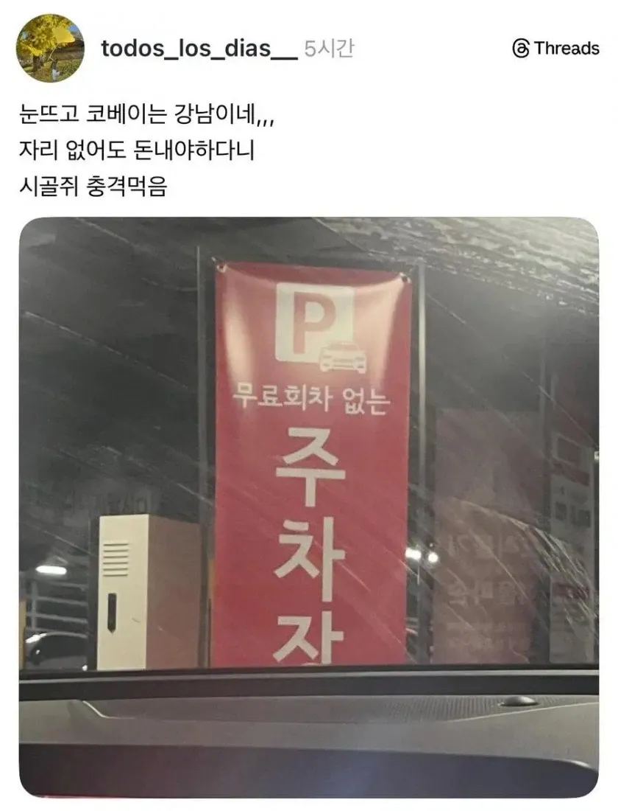
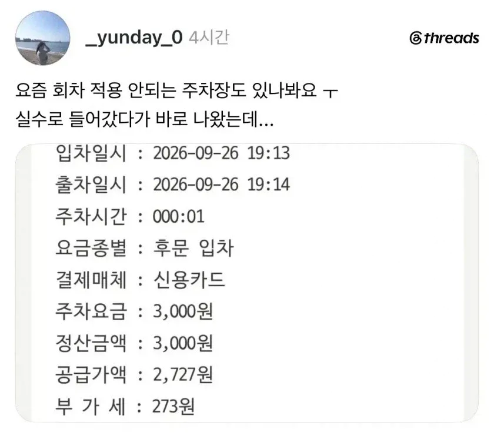

자리없어서 나와도 돈 내야함


자리없어서 나와도 돈 내야함
서울을 차가운 씹새끼들의 도시로 만든 주범
진짜 코베이는곳이네 ㅋㅋㅋ
자리 없으면 입장이 안되게 하던가
저거 소비자보호원 신고 안되나
시발 저건좀; 자리없어도 받아쳐먹는거임?
최소한 주차장 입구에 만차 표시는 되겠지?
숏컷 이용해서 그런 곳도 있다고 들었는데, 자리가 없는건 돈을 안 받던가 만차라고 표시를 해야하는거 아닌가
성균관대
주차료가 아니라 통행료 아니냐?ㅋㅋㅋ
역ㅡ겹 몇대 자리 남았는지는 표시해줘야지
온갖 악행이 일어나는 그곳..
코 베어 가는 곳 ㅠ
강남만 그런거지? 아직
저건 강남문제가아니라 저 주차장이 문젠거지ㅋㅋㅋ
저건 진짜 양아치네